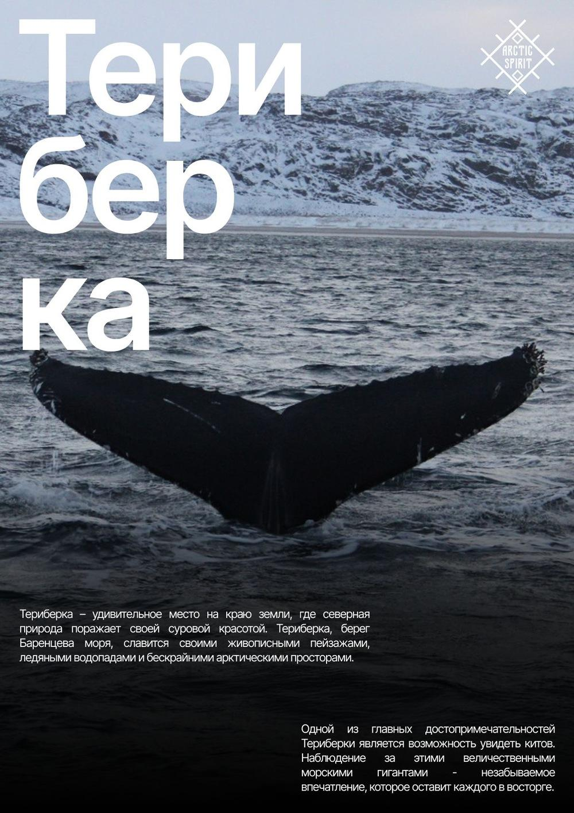
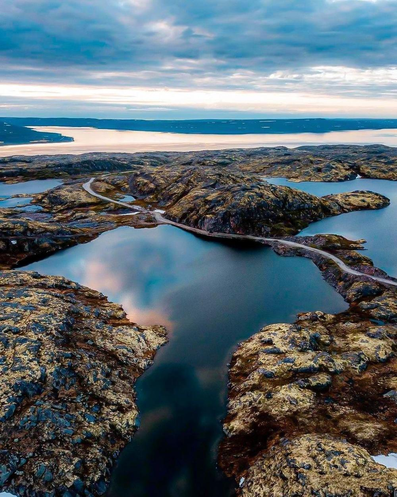

Как же всё это увидеть? Где?

Крошечный посёлок на краю земли — кладбище кораблей, пляж с «драконьими яйцами» и охота за северным сиянием.
Смотреть маршрут
Следы Великой Отечественной, мыс Немецкий — самая северная точка европейской России — и каменные «пальцы» мыса Кекурский.
Смотреть маршрутЛюбите север